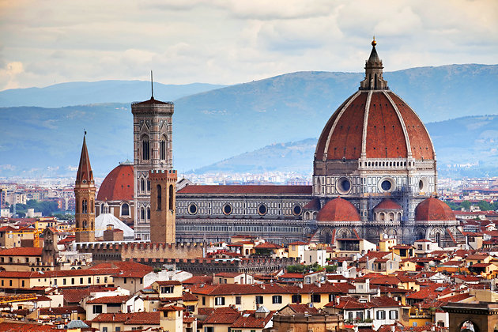
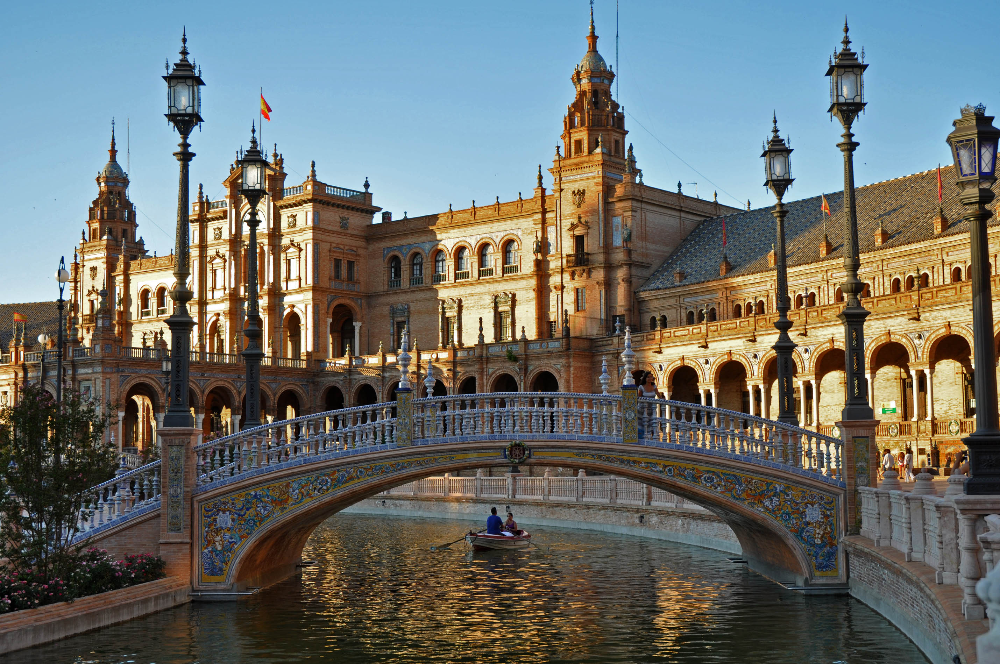
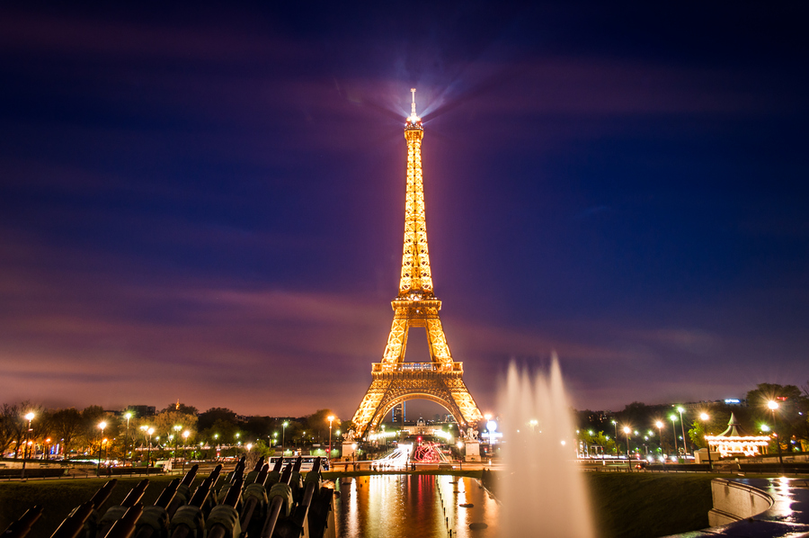

Places I visited to explore World and Me
We visited Spain. From Spain to France. We have been there for a week. Then we flew to Italy. We have been there for 4 days. And then we flew back to US. I felt like I should always make my summer vacations this exciting Explore Nature
- 
Italy
- Italy, commanding a long Mediterranean coastline, has left a powerful mark on Western culture and cuisine. Its capital, Rome, is home to the Vatican as well as landmark art and ancient ruins. Other major cities include Florence, with Renaissance treasures such as Michelangelo’s "David" and its leather and paper artisans; Venice, the sinking city of canals; and Milan, Italy’s fashion capital. Venice -Italy
- 
Rome
- Spain, on Europe’s Iberian Peninsula, is really 17 autonomous regions, each with its own geography and culture. The capital, Madrid, is home to the Royal Palace and singular Prado museum, housing works by European masters, and Segovia to the north has a fairy-tale medieval castle and Roman aqueduct. Catalonia’s capital, Barcelona, is defined by Antoni Gaudí’s quirky modernist architecture, including the Sagrada Família basilica. Find more about Spain here
- 
Spain
- France, in Western Europe, encompasses medieval and port cities, tranquil villages, mountains and Mediterranean beaches. Paris, its capital, is known worldwide for its couture fashion houses, classical art museums including the Louvre and monuments like the Eiffel Tower. The country is also renowned for its sophisticated cuisine and its wines. Lascaux’s ancient cave drawings, Lyon’s Roman theater and the immense Palace of Versailles are testaments to its long history Find more about France here